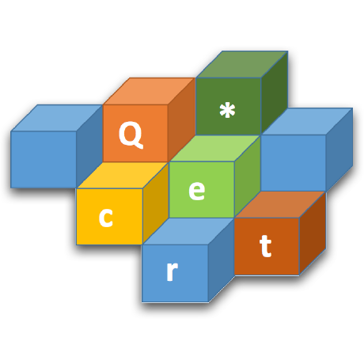

Welcome to Q*cert
Q*cert is a query compiler written using the Coq proof assistant.
As with any query compiler, it takes some input query and generates code for execution. See Q*cert in action in the online demo.
By using modern theorem proving techniques, Q*cert aims at providing strong correctness guarantees, ensuring that the generated code always returns the result as specified by the query semantics. Read more about the underlying technology on the About Q*cert page.
Q*cert is open-source, the most recent code can be found on github.